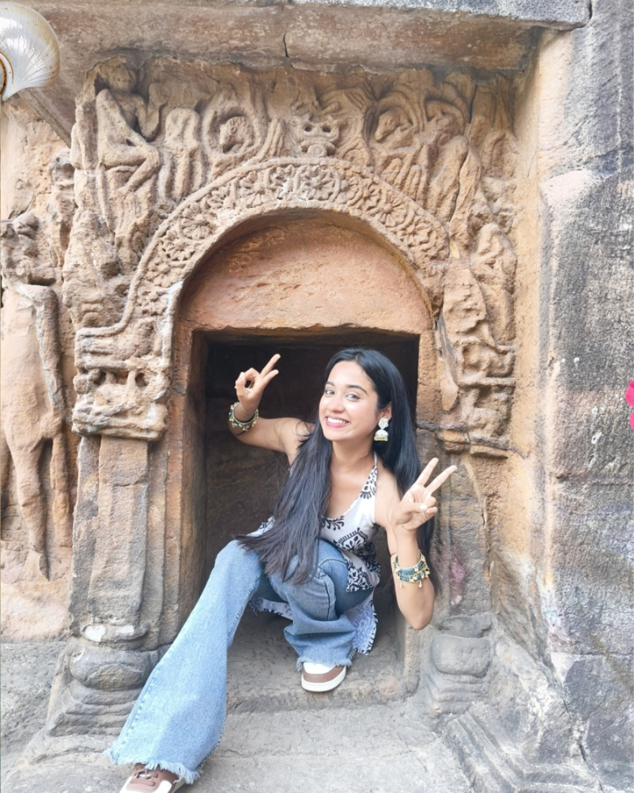
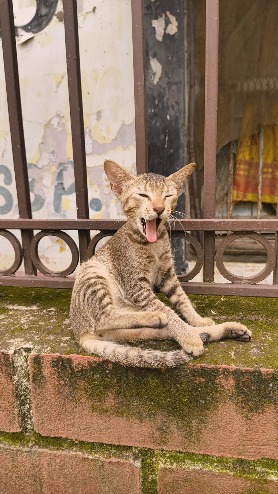
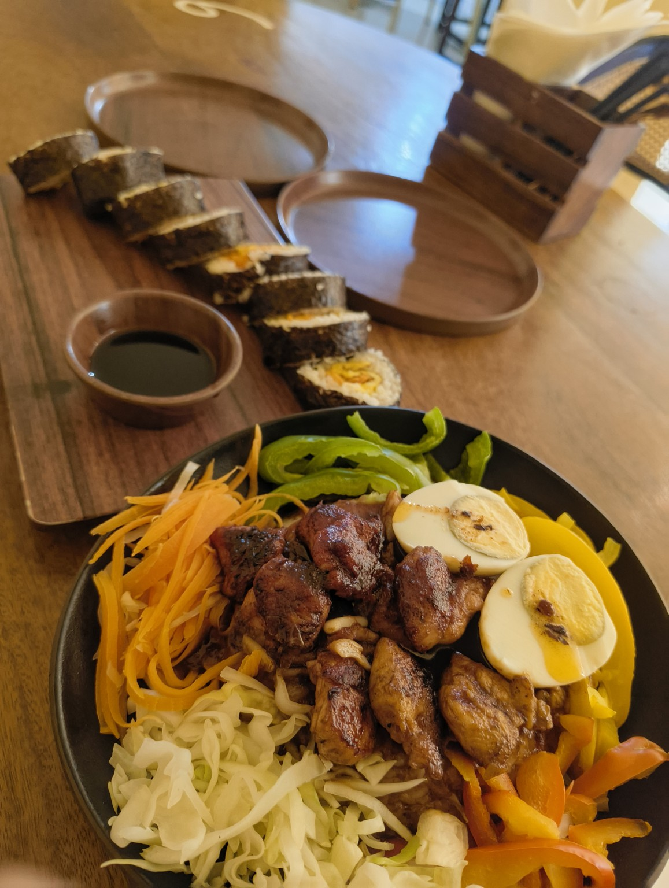
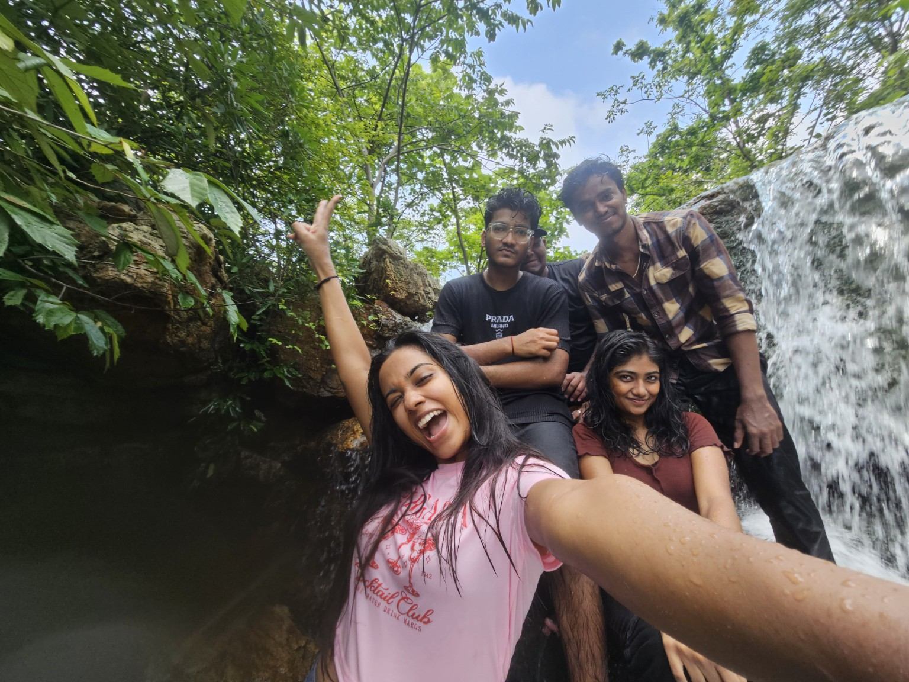
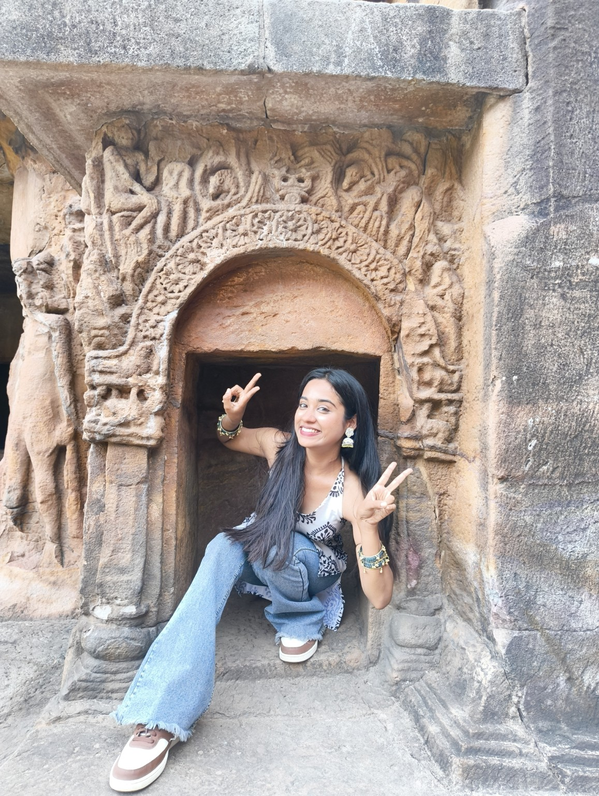
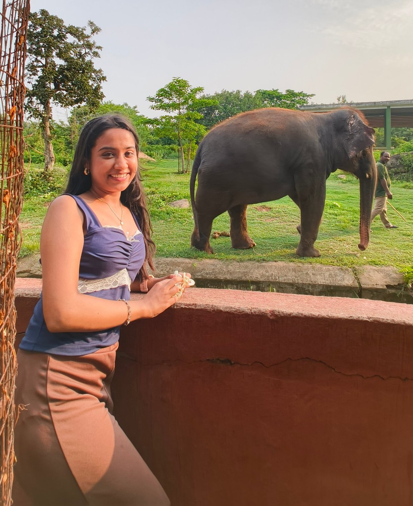
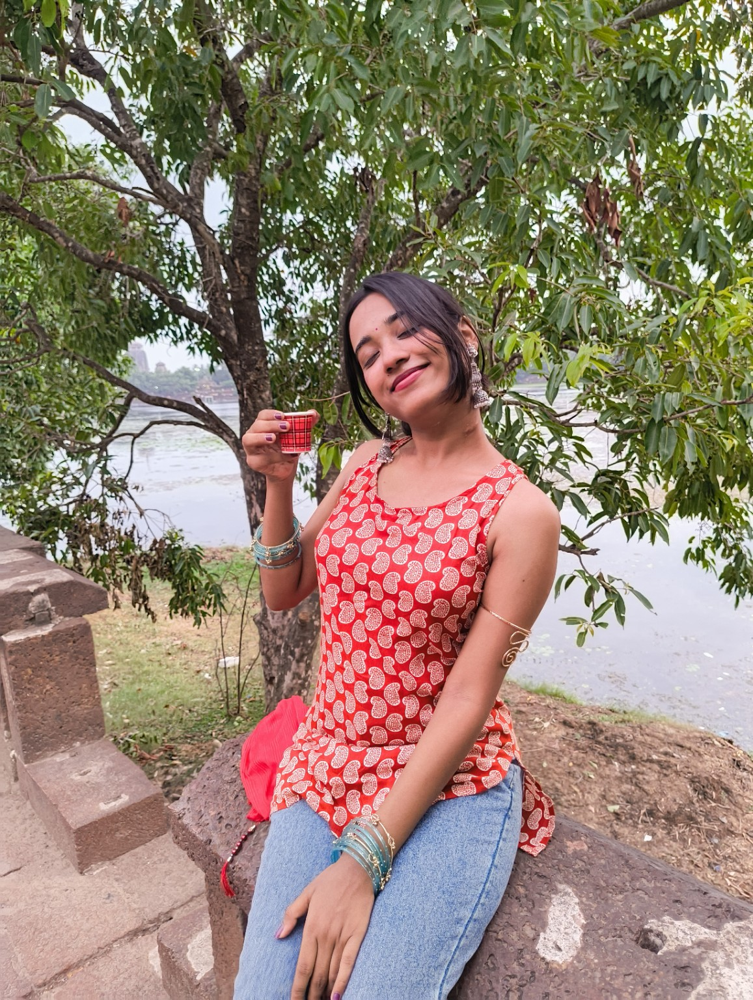
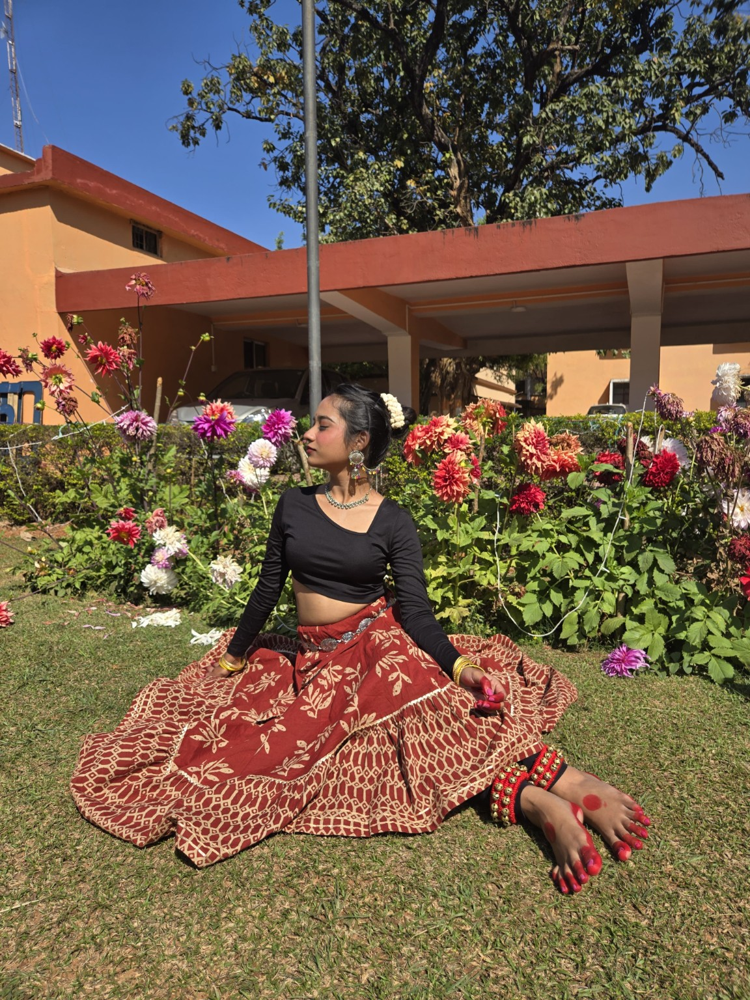
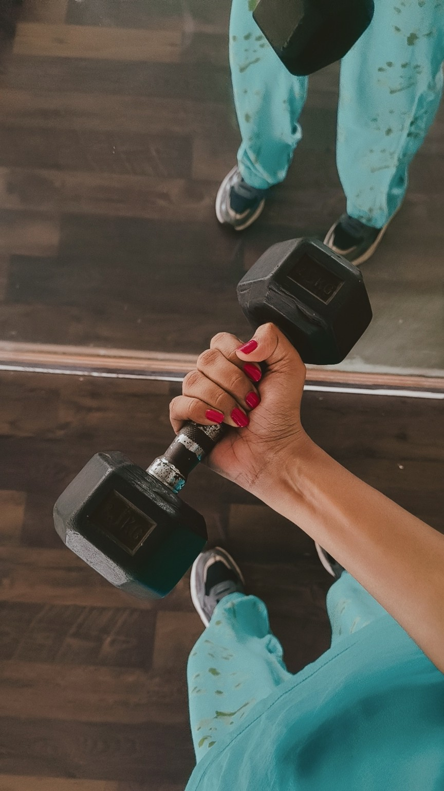

⚡
The problem-solver
Electrical engineering gives me ways to explore systems, think logically, and work through challenges one step at a time.
Electrical engineering student, curious learner, creative soul, and collector of stories — from the screen, the places I visit, and the little moments in between. This is my corner of the internet: a work in progress, just like me.

I'm studying Electrical Engineering at Veer Surendra Sai University of Technology (VSSUT), Burla. I enjoy understanding how things work, learning new skills, and finding creative ways to express ideas. Engineering is one part of my story — design, films, travel, and everyday discoveries are part of it too.
Electrical engineering gives me ways to explore systems, think logically, and work through challenges one step at a time.
Graphic design, painting, and journaling give me space to play with ideas and turn feelings or inspiration into something visual.
I'm interested in vlogging and capturing experiences — little moments, new places, and stories worth remembering.
A snapshot of what I've studied, explored, and am working to learn. This page can grow as my journey does.
Currently studying at Veer Surendra Sai University of Technology (VSSUT), Burla.
My learning includes MATLAB, AutoCAD, and SCADA, alongside the fundamentals of electrical engineering.
I'm exploring HTML, CSS, JavaScript, programming, and software engineering — building new skills by making things and learning as I go.
A few engineering and learning projects that reflect my curiosity. Each one represents concepts I've explored, not a claim of a finished product or award.
Exploring PID speed control and torque ripple reduction in brushless DC motors for electric vehicle applications.
A project concept using soil-moisture feedback and a pump to support more responsive watering.
Learning about solar PV systems and exploring Sliding Mode Control (SMC) as an alternative controller approach.
Not everything has to be a technical project. Sometimes it can be a design, a page in a journal, a video, or a moment I wanted to keep.
Playing with layouts, typography, colours, and visual ideas. This space can become a gallery for my designs and edits.
Capturing experiences and turning little everyday moments into stories. The best memories deserve a replay.
A slower, more personal kind of creativity — making things by hand, collecting thoughts, and giving ideas somewhere to live.
I love discovering other places and cuisines. Food can be its own kind of travel, even before the actual trip.
A few things that make me happy: meeting animals, trying different food, finding new places, making time for chai, moving to music, and showing up for myself at the gym. Basically, a tiny photo diary of the things I want to remember.








Sci-fi, thriller, suspense, and rom-coms — depending on the mood. Here are some shows on my favourites list.
I'm building a future with both sides of me in it: the part that loves to solve problems, and the part that wants to make something beautiful.
Learning, creating, travelling when I can, finding my next favourite show, and staying curious about what comes next.
Back to the beginning ↑